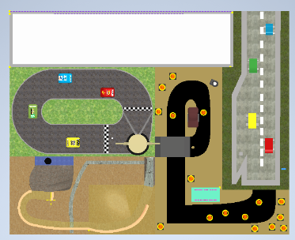
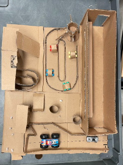
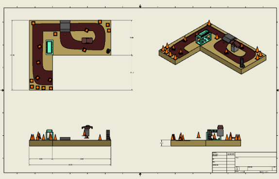
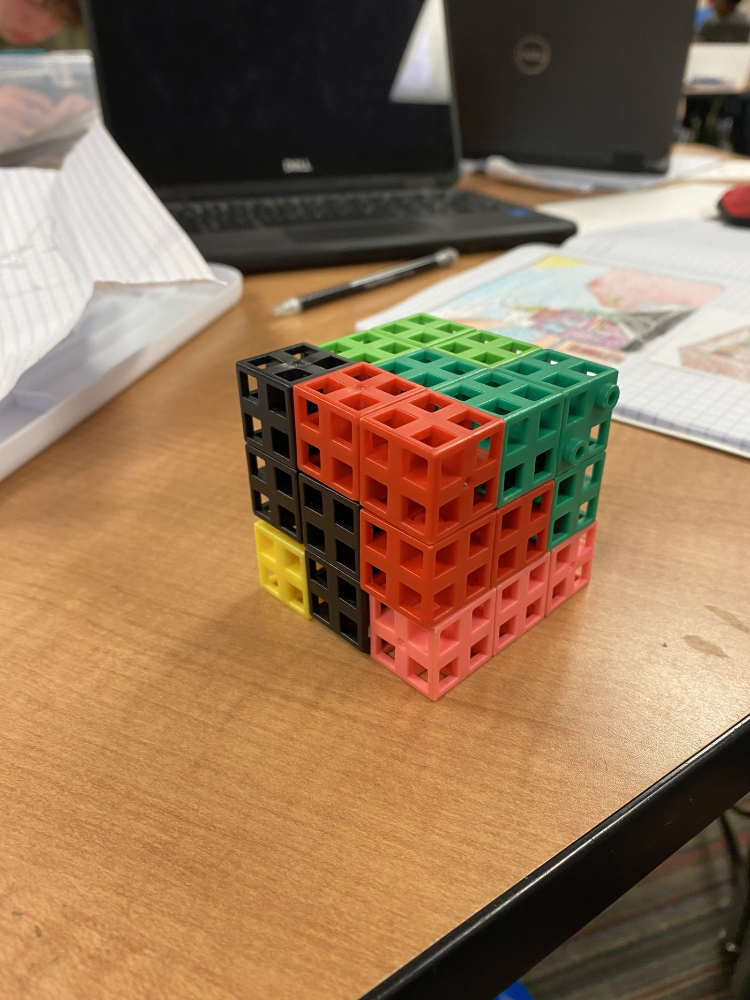
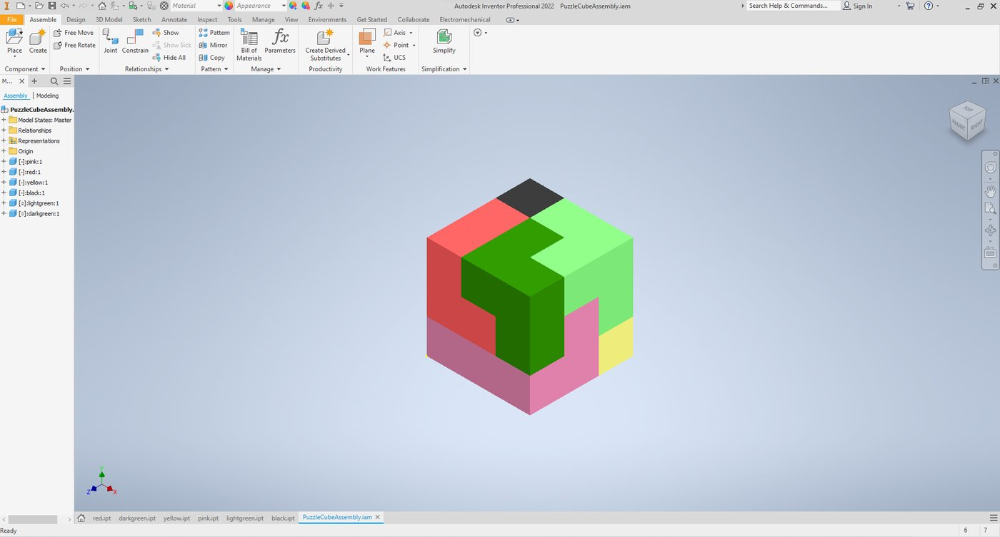

Alan Siby
Portfolio
Incoming UT Austin Freshman
Aspiring Aerospace and Mechanical Engineer
Class of 2030
Austin, Texas
As a research intern at the Institute for Computing in Research, I built a Python simulation of a single axis spacecraft attitude control system. The spacecraft is modeled as a rigid body driven by a reaction wheel, with a PD controller applying torque based on angular position and velocity error, subject to realistic limits on wheel speed and motor torque. I ran a grid search across six spacecraft configurations to optimize the controller's gains against settling time, overshoot, and control effort, then traced down and fixed a subtle bug in the settling time logic that was producing misleadingly clean results. I co-authored the findings with my mentor and published the work on
engrXiv.
Tools & Skills
Python, NumPy, Matplotlib, control theory, simulation, optimization
Outcome
Published research paper on engrXiv with full technical documentation
2
Working with my team, Flow State (Ashmeet Bedi and Niketh Raghu), I helped design a full ergonomic redesign of the Apple Magic Mouse, targeting three specific flaws: the thin shell forces a claw grip that strains the forearm, the plastic skates create friction against the desk, and the rear charging port makes the mouse unusable while it charges. We validated the concept with a user survey before building anything, then went through several prototype rounds, moving from a single piece shell through two piece hump and base iterations to a final magnetic design with a dedicated stand that charges the mouse vertically. We shared the design as an open source model.
Tools
Autodesk Inventor, 3D printing, user testing
Skills
Human factors, CAD design, prototyping, iteration
Outcome
Functional prototype with validated ergonomic design, open source model
Team
Flow State (Ashmeet Bedi, Niketh Raghu)
3



The Mall of America put out a call for concepts for an indoor mini golf course, and my five person team pitched a Cars themed design built around five sections: a movie screen trailer, a race track, a highway, a mountain and waterfall feature, and my section, Radiator Springs. I designed the Radiator Springs hole, working in a gas station structure, a rock and tunnel formation, and a cone lined path, starting from a hand sketch of the layout before modeling it in Autodesk Inventor. Once every teammate's section was modeled, we assembled them into a single course and built a full scale cardboard prototype to test how the sections fit together.
Skills
Mechanical and CAD design, team collaboration, prototyping
Team
Ashmeet Bedi (Design Manager), Alan Siby (Design Engineer, Radiator Springs), Eileen Do, Kellan Walsh, Viswanathan Manickam (Design Engineers)
Result
Cardboard prototype that validated course layout and proportions, with room identified to improve theming and hole to hole flow
4


Fine Office Furniture, Inc. throws away tens of thousands of scrap three-quarter inch hardwood cubes as a byproduct of its manufacturing process, and wanted a way to turn that waste into something sellable in its showroom. I designed a six piece 3D wooden puzzle system sized for a high school challenge level, starting with hand sketches of each piece on isometric grid paper before modeling, extruding, and assembling them in Autodesk Inventor. I also produced a full set of formal drawing sheets, one per piece plus a combined assembly sheet, to document the design.
Skills
3D modeling, technical drawing, design for production
Impact
Turned manufacturing waste into a sellable showroom product
5
My team designed and built a full size chair made entirely of cardboard, using anthropometric tables to calculate dimensions that would comfortably fit a wide range of body types. We sketched several concepts, including a splayed leg "spider" design and a wider, more enclosed "comfy" form, scored them with a decision matrix, and picked a direction to pursue. Before committing to the full size build, we tested the design at small scale with a cardstock prototype.
Tools
Cardstock, cardboard, anthropometric tables
Skills
Human factors, structural analysis, iteration, testing
Process
Anthropometric analysis, decision matrix, cardstock to full scale prototyping
Deliverable
Full size cardboard chair, validated first with a small scale cardstock prototype
6
A fictional client, Castles R Us Toy Design Company, wanted a model castle to sell as both a children's toy and a collectible, modeled entirely as a single Inventor part no greater than 4 inches in diameter. The brief called for a long list of required features, including a motte, windows of varying sizes, a staircase, a moat, archer loopholes, at least one roofed tower, crenelated walls, a flag, and at least three turrets. After sketching the layout by hand, I built the final model using Loft, Extrude with Taper, Mirror, Rectangular and Circular Pattern, Revolve, Sweep and Coil, and Shell, all within one parametric part file.
Skills
Complex CAD, surfacing, parametric modeling, design documentation
Scale
Single Inventor part file, no greater than 4 inches in diameter
Complexity
Full required feature set (motte, moat, turrets, staircase, drawbridge, chapel, and more) in one parametric part
7
I modeled and animated a trammel mechanism, a classic linkage where a rotating central beam drives two sliders along perpendicular tracks, entirely in Autodesk Inventor. I used the Insert constraint to fit fasteners like screws precisely into their holes, then applied motion constraints so that spinning the central beam drove the sliders exactly as the physical mechanism would.
Skills
Kinematics, motion simulation, mechanism design, assembly constraints
Mechanism
Rotating central beam drives two sliders along perpendicular tracks
Deliverable
Inventor assembly animation demonstrating the linkage in motion
8
I sketched several cam-driven toy concepts, including a heart cam alien, a snail cam plane, and an eccentric cam basketball, before settling on a design where a rotating cam and follower pop an "Alien UFO" figure up out of its housing. After modeling the full assembly, including the box panels, axle, cams, follower, and hand crank, I produced dimensioned drawings for every part and built a working wooden version by hand.
Tools
Autodesk Inventor, wood, hand tools
Skills
Cam profile design, technical drawings, fabrication, assembly
Outcome
Fully functional mechanical toy with a polished hand crank
Materials
Wood housing, axle, hand finished crank, pop-up mechanism
9
I tore down a Revlon hair dryer to map the full user interaction flow, from unboxing to storage, then disassembled it to identify each internal subsystem: the DC motor and fan, the resistive heating coils on mica boards, the switch PCB, and the shell that channels airflow. I then ran repeated physical tests on both heat settings, measuring exit air temperature, wind speed, noise level, and total dry time, logging temperature every 5 seconds and averaging each metric across four trials. The high setting cut dry time roughly in half compared to the low setting, but at the cost of noticeably more noise and heat.
Tools
Thermometer, anemometer, decibel meter
Skills
Reverse engineering, experimental design, data analysis, technical reporting
Deliverable
Functional model diagram, four trial performance data, presentation slides
Results
High: 181.6°F, 20.1 mph, 94.17 dB, 24.42 sec | Low: 143.5°F, 12.1 mph, 84.57 dB, 50.89 sec
10
For More Details
Visit my website for comprehensive project descriptions, additional images, and interactive details about each project.
alansiby07.github.io/portfolio
11